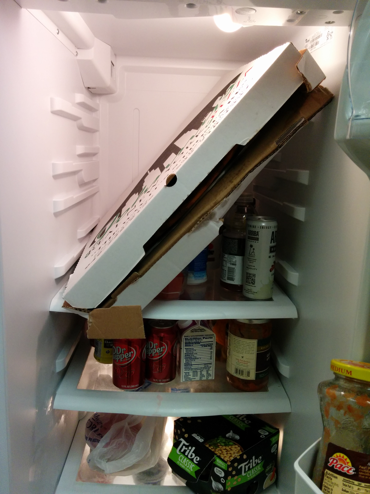

Features
Making Features work for you.
Created by Frank Anderson / @frobdfas
One of the most useful things to come into the forefront of Drupal development recently is the features module. This module is so useful that, in spite of being a difficult-to-use-beast-that-can-easily-completely-screw-up your site, it is a key part of every project we work on.
I will go over some strategies around building and deploying features. How it can help you, and how it can hurt you very very badly.
Hello My name is FRANK
- Frank Anderson
- frob on drupal.org and IRC
- Maintainer of:
- Drupal for Firebug
- Google Analytics Event Tracker
- Google Analytics Lite
- Various other Kwall D.o Projects
Kwall Slide
We are a no limits interactive agency.
Do not tell me it cannot be done.
Problem with Drupal Development
- Configuration Stored in Database
- Multiple Devs working in Multiple Environments
- Duplication of work
Solutions that don't work
- Backup and Migrate
- Doing the work twice
- Custom Code
- Configuration module
Solution that works (Features)
What is Features
What does features do
Features provides two things.
- Exportables for key pieces of Drupal core configuration --mostly content type.
- An API to allow other modules to provide a central interface for exportables.
Features attempts to provide a way of implementing Drupal's configuration in code.
What doesn't features do
- Content
- Variables (not out of the box)
- Taxonomy
- Blocks
- Users
- Export the settings for the key feature of the most important contributed module in your largest project.
Anatomy of a Feature
dot info
Tells the Features module what to export.
name = Example Base
core = 7.x
package = Example
dependencies[] = addressfield
dependencies[] = caption_filter
dependencies[] = date
[...]
dependencies[] = wysiwyg
dependencies[] = wysiwyg_template
features[ctools][] = strongarm:strongarm:1
features[features_api][] = api:2
features[field_base][] = body
features[field_base][] = comment_body
[...]
features[field_base][] = title_field
features[field_instance][] = node-page-body
[...]
features[field_instance][] = node-page-title_field
features[filter][] = filtered_html
features[filter][] = full_html
features[node][] = page
features[taxonomy][] = article_categories
features[taxonomy][] = article_tags
features[taxonomy][] = article_type
features[user_role][] = administrator
features[user_role][] = editor
features[variable][] = comment_anonymous_page
[...]
features[variable][] = node_submitted_page
features[wysiwyg][] = full_html
project path = sites/all/modules/features
*.features.inc
This is where features does its business.
"1");
}
}
/**
* Implements hook_node_info().
*/
function example_base_node_info() {
$items = array(
'page' => array(
'name' => t('Page'),
'base' => 'node_content',
'description' => t('Use basic pages for your static content, such as an \'About us\' page.'),
'has_title' => '1',
'title_label' => t('Title'),
'help' => '',
),
);
return $items;
}
?>
*.features.*.inc
Module specific stuff.
'administrator',
'weight' => 8,
);
// Exported role: editor.
$roles['editor'] = array(
'name' => 'editor',
'weight' => 7,
);
return $roles;
}
?>
Features Organization
- Custom Theme
- sites/*/themes/custom
- Custom Modules
- sites/*/modules/custom
- Features
- sites/*/modules/custom/features
Features Naming Conventions
Name it for what it does, but be mindfull of name collisions.
Organize the Features
Features is dumb, think for Features. Do not trust that it knows.
- Enable your Features
- Test your Features
- Check your Features Dependancies, Field Groups, Contrib Entity Settings
How to use Features - Basic
Using the UI
Features Process
- Backup
- Commit
- Export
- Commit
- Enable
- Test
- Repeat
Features UI Page
Using the UI
How to use Features - Advanced
Drush commands you need to know
- Feature Revert -- fr
- Reverts a feature that has been overridden to what is in code.
- Feature Update -- fu
- Updates a feature's code to what is currently in the database.
- fra & fua
- The same as above but with all currently enabled features.
How how Features builds a feature.
- Looks at the .info file
- ...
- Profit
And what does this mean?
This means that you can add components to the info file and then run drush feature-update and it will add that component.
What if something changes?
A feature will have an overrideen status if something changed.
If the diff module is enabled then you will be able to diff the features before exporting them. This way you can see what changed.
A Feature is a module
You can put custom code into the *.module file.
How to do Deployment with features
Deployments Should be..
Repeatable, automated, testable
Utilize Update Hooks
/**
* Enable some custom code
*/
function custom_feature_update_7001() {
features_revert(array('feature' => array('component')));
}Utilize Soft Dependancies
/**
* Enable some custom code
*/
function custom_deploy_update_7022() {
module_enable(array('plupload'));
}How features will abandon you

How features will abandon you
- Too good to be true
- Too dumb to be helpfull
- doesn't keep track of things
- Not everything supports Features
- What? Features is buggy?
Features in Drupal 8
Drupal 8's Config Management system doesn't replace features.